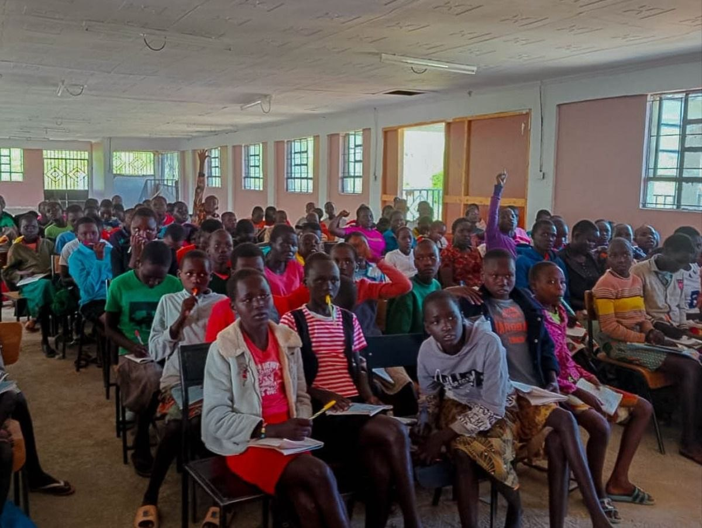
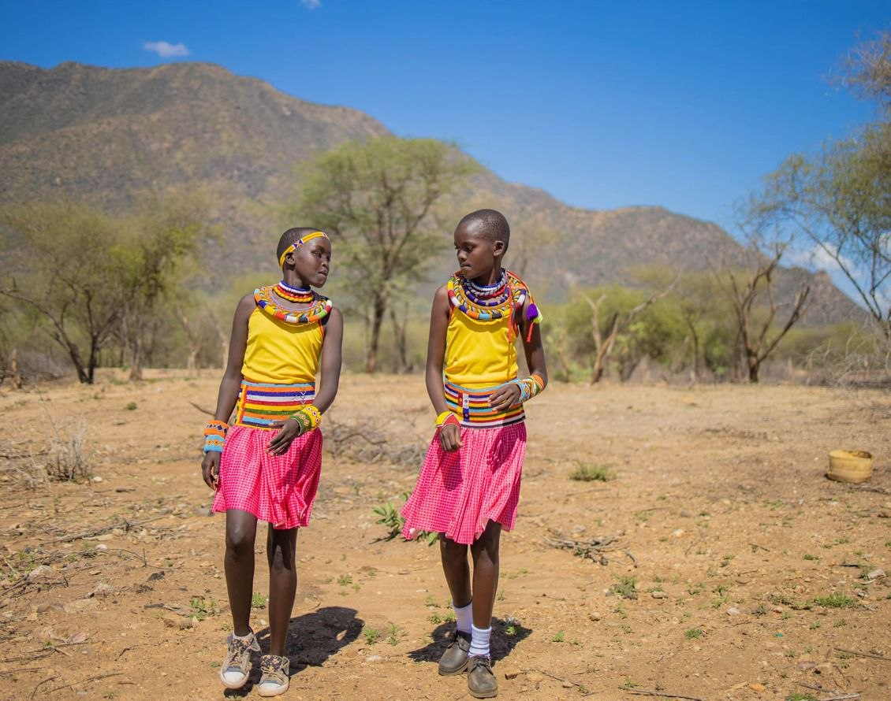
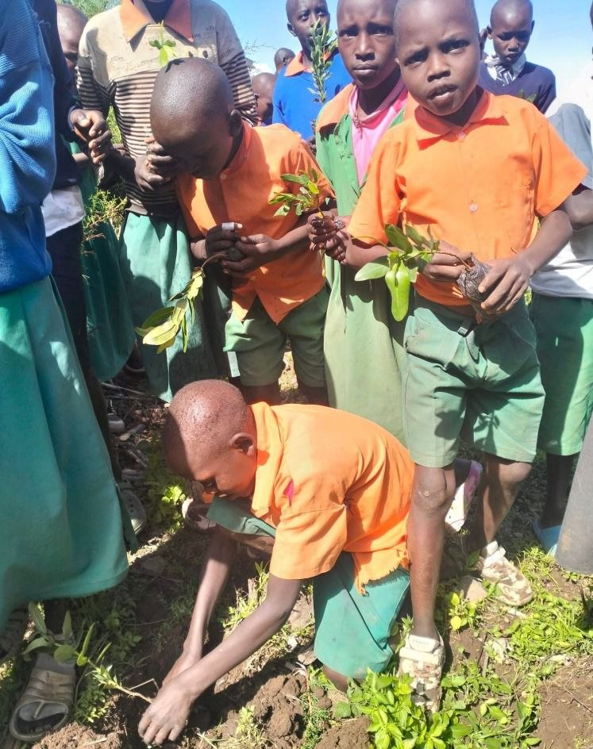
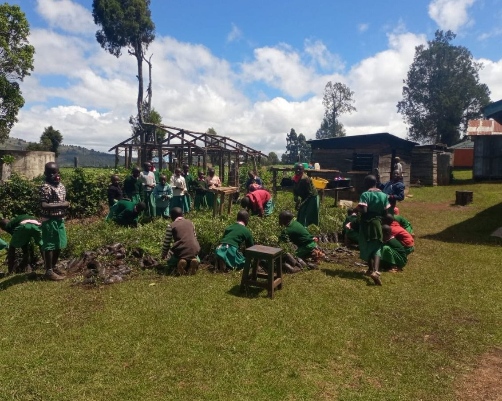
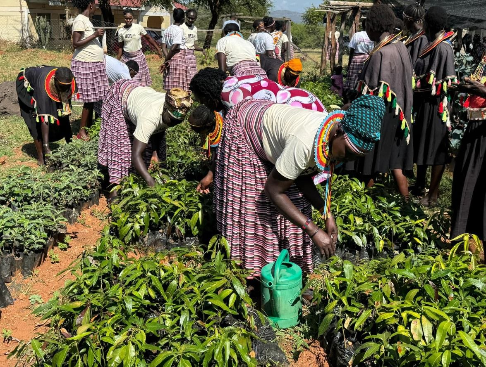
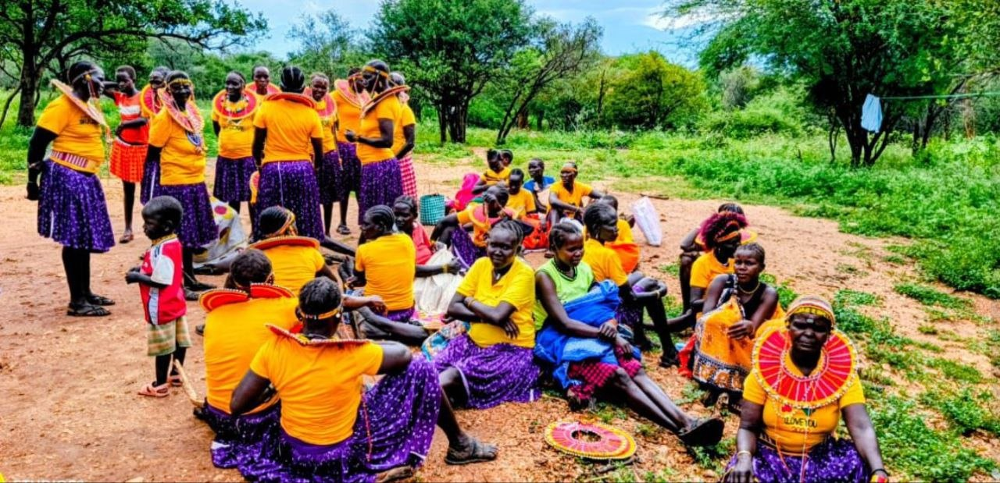

Girl Rights Advocacy & Community Empowerment
Building safer futures for girls and children in West Pokot.
GRACE CBO works with families, schools, local leaders, and young people to prevent abuse, expand education, and create protective community systems that last.
- Child protection and safeguarding
- Education access and retention
- Community-led advocacy
Who We Are
Advocates for the best interest of the child through education , mentorship and policy change in West Pokot County, Kenya.
GRACE is rooted in West Pokot and responds to the realities children face every day: limited access to education, harmful practices, weak safeguarding systems, and barriers to opportunity for girls and vulnerable families.
Our work combines prevention, response, advocacy, and practical support so that children are not only protected from harm but also able to learn, grow, and lead.
Vision
A just and inclusive society where every child grows up protected, empowered, and thriving.
Mission
To protect and promote children's rights through community-based action, partnership, and advocacy.

What makes the website feel professional
Clear impact, trusted identity, donor pathways, mobile usability, and stronger calls to action are all now built into the experience.
Programs
Core program areas that respond to real community needs.
The site now presents your work like a serious nonprofit organization: focused, measurable, and easy for partners and donors to understand.
Child Protection & Safeguarding
Safe spaces, reporting channels, referrals, and awareness sessions that reduce risk and strengthen response systems.
Education Access & Retention
Support for school attendance, learning continuity, mentorship, and locally relevant education pathways.
Girl Rights & Advocacy
Community dialogue, policy engagement, and leadership initiatives that protect girls from harmful practices.
Health & Wellbeing
Psychosocial support, wellbeing education, and family-centered interventions that promote resilience.
Life Skills & Empowerment
Mentorship, confidence building, and practical life skills that prepare girls and youth for stronger futures.
Partnership & Community Mobilization
Collaboration with schools, local administration, parents, and development partners to scale sustainable change.
How We Work
A simple, credible delivery model.
Listen
We start with community voices, especially children, caregivers, teachers, and local leadership.
Design
Programs are shaped around protection risks, education barriers, and the lived context of West Pokot.
Implement
We mobilize trained local actors, community champions, schools, and volunteers to deliver support.
Measure
We track progress, document lessons, and share impact with donors, partners, and the community.
Impact
Showing evidence of progress helps donors, partners, and communities trust the work.
A professional CBO website needs more than a mission statement. It needs visible outcomes, practical milestones, and proof that programs are reaching real people.
Through targeted guidance and counselling, GRACE has supported vulnerable children and youth to regain confidence, return to school, and participate more actively in their communities. Several beneficiaries have gone on to become peer mentors and role models for others.
See stories from the field0
Children reached through protection and education programs
0
Schools engaged with support, training, or referral pathways
0
Community advocates and volunteers trained
0
Community dialogues and awareness engagements delivered
Championing Children's Interests
Putting children’s wellbeing, voice, and potential at the center of every action.
Championing children’s interests means actively advocating for their rights, protecting their wellbeing, and creating inclusive environments where they feel safe, valued, and able to grow.
For GRACE, this includes supporting children academically, emotionally, and socially while working closely with families and communities to ensure every child has equitable opportunities to thrive.
Active Advocacy
Speaking up for children’s rights and ensuring their best interests are reflected in decisions that affect them.
Holistic Support
Responding to emotional, social, physical, and educational needs so children can grow with dignity and confidence.
Opportunity & Empowerment
Helping children access education, safe spaces, mentorship, and the support they need to reach their full potential.
Family & Community Partnership
Working with caregivers, schools, and local leaders to build protective, encouraging systems around every child.
Stories & Field Updates
Use stories to make impact human and memorable.

Featured Story
Supporting girls to stay safe, confident, and in school.
Through mentoring, advocacy, and community engagement, GRACE helps families and local leaders prioritize protection and education so girls can continue learning with dignity.

Education support
Working with schools and caregivers to improve attendance and retention.

Protection outreach
Building local awareness and referral systems that strengthen child safety.

Community leadership
Mobilizing trusted local voices to advocate for the rights of girls and children.
Get Involved
Clear ways supporters can respond immediately.
Donate
Support child protection, education access, and community-based advocacy programs.
Support the MissionPartner
Work with us on program delivery, referrals, training, or funding opportunities.
Start a PartnershipVolunteer
Bring your time, expertise, or networks to strengthen local impact.
Volunteer With Us
Donate
Make giving feel clear and trustworthy.
This section now gives your website a more professional fundraising feel with structured giving options and a clean donor experience.
- M-Pesa giving pathway
- Bank transfer details
- Partnership and inquiry contact points
M-Pesa
Business Number: 123456
Account Name: GRACE CBO
Bank Transfer
Bank: Equity Bank
Account Name: GRACE CBO Child Rights
Account Number: 1234567890
Request Official Donation Details
Frequently Asked Questions
Helpful answers for donors, partners, and visitors.
What does GRACE CBO do?
GRACE advances girl rights, child protection, education access, community advocacy, and family wellbeing in West Pokot.
Who do you work with?
We work with children, caregivers, schools, volunteers, local leaders, faith actors, and development partners.
Can organizations partner with GRACE?
Yes. The website now clearly positions GRACE as partnership-ready for local collaboration, donor engagement, and project support.
How can I support the organization?
You can donate, volunteer, share the work, or contact the team for collaboration and sponsorship opportunities.
Contact Us
Give partners and supporters an easy next step.
A professional organization website should make it simple to ask questions, start partnerships, and reach the team quickly.
Kapenguria, West Pokot County, Kenya
info@gracepokot.org
+254 736 645 445
WhatsApp available for direct outreach